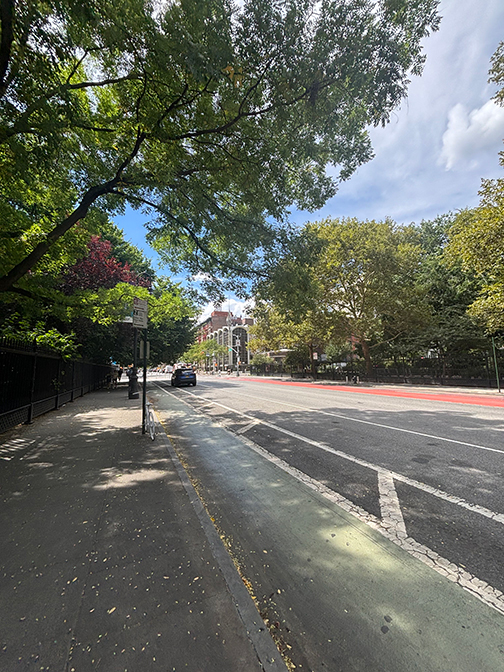

I leave my residence hall at 301 First Avenue, cross the street, and turn right. This part of the walk is usually quiet, few cars, few people, and pigeons scurrying along the sidewalk.
I pass a man wearing Gucci pants, a camouflage backpack, and a rag tied around his head. Farther ahead, NYU Langone Orthopedic Hospital comes into view before I cut through Stuyvesant Park, a shortcut that saves me about two minutes. Inside, Uber Eats riders wait on benches or stand beside their bikes, probably taking a break between deliveries
Continue onto East 15th Street